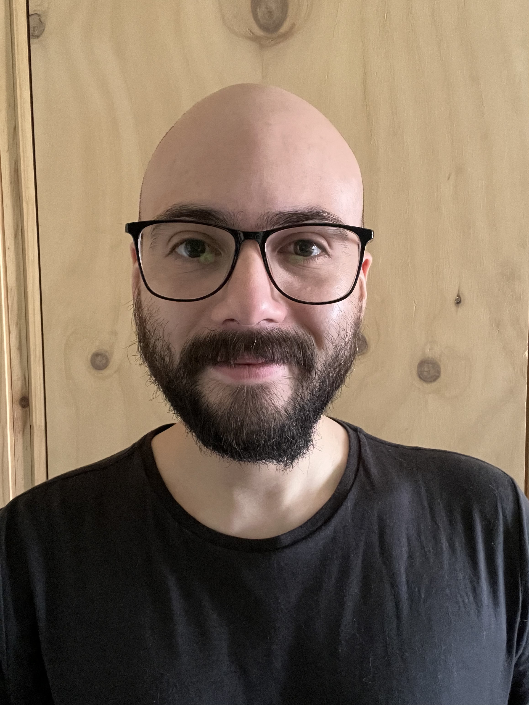

Curriculum Vitae

Pedro Salinas Silva
Datos Personales
Sobre mí
Titulado de la carrera Ingeniería Conectividad y Redes en el año 2020, he trabajado en la industria de telecomunicaciones en el área de fibra óptica y en Ciberseguridad en el área de monitoreo. Actualmente me encuentro estudiando programación de forma independiente, practicando principalmente en lenguaje Javascript.
Formación académica
- Ingeniería en Conectividad y Redes
Instituto Profesional Duoc UC | 2016 - 2020
- Ingeniería en Informática mención en Informática (Incompleta)
Universidad Tecnológica Metropolitana | 2013 - 2015
Certificaciones
- Certificación MTE Microsoft
- Certificación TOEIC Bridge nivel intermedio (2019 - 2020)
Habilidades
- Conocimientos en JavaScript ES9, CSS3 y HTML (Programa Oracle ONE)
- Fundamentos de React Js
- Conocimientos básicos en Python
- Fundamentos de Python para la Ciberseguridad
- Inglés: Oral intermedio, Escrito Avanzado